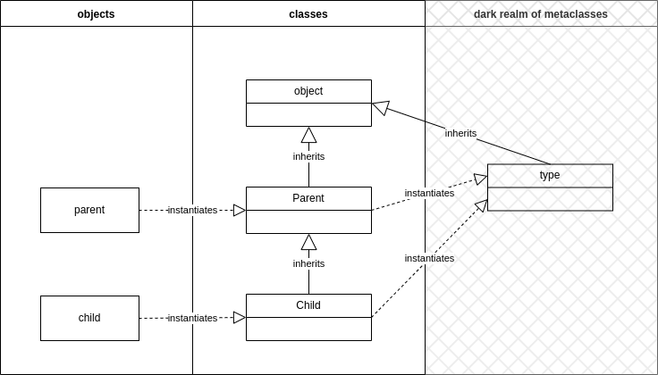

Advanced Python: Metaclasses
This article is purposefully going to be a bit advanced and there is at least two reasons.
For one, the basic intros are already available everywhere, and it is a path walked a million times. For the reader who is trying to get things done in Python that will be more than enough.
For two, more advanced talks about OOP mostly go in the direction of describing encapsulation, abstraction, inheritance and polymorphism, and how to use them in numerous design patterns guided by some of the principles in software engineering (for example SOLID).
Now, my idea is to briefly write about how Python enables OOP paradigm. In essence, what is behind these lines of code:
class Person:
pass
class Child(Person):
pass
c = Child()
Back in the days when you learned about object-oriented programming, you most probably came across a general idea that describes what classes and objects are, and it goes like this:
“Class is like a cookie mold. And objects are cookies molded by it”.
This is a very intuitive explanation and conveys the idea rather clearly. Having said that, our example defines two templates with little or no functionalities, but they work. You can play with defining the __init__ method, set some object attributes, and make it more usable. However, what is interesting in Python is that even though a class is a “template” that is used to create objects from it, it is also an object itself. Everyone learning OOP in Python would quickly go over this statement, not really thinking in depth. Everything in Python is an object, so what? But once you start thinking about this, a lot of questions pop up, and interesting Python intricacies unravel.
Before I start asking these questions for you, let’s remember that in Python, everything is an object. And I mean everything. This is probably something you already picked up, even if you are a newbie. The next example shows this:
class Person:
pass
id(Person)
# some memory location
class Child(Person):
pass
id(Child)
# some memory location
# Class objects are created, you can instantiate objects
c = Child()
id(c)
# some memory location
Based on these examples, here are some questions that you should ask yourself:
- If a class is an object, when is it created?
- Who creates class objects?
- If class is an object, how come I’m able to call it when instantiating an object?
Class object creation
Python is widely known as an interpreted language. This means there is an interpreter (program or process) that goes line by line and tries to translate it to machine code. This is opposed to compiled programming languages like C, where programming code is translated into machine code before you run it. This is a very simplified view. To be more precise, Python is both compiled and interpreted, but this is a subject for another time. What is important for our example is that the interpreter goes through the class definition, and once the class code block is finished, the class object is created. From then on, you are able to instantiate objects from it. You have to do this explicitly of course, even though class objects are instantiated implicitly.
But what “process” is triggered when the interpreter finishes reading the class code block? We could go directly to details, but one chart speaks a thousand words:

If you are not aware, Python has type functions that can be used for our purpose(s) now. By calling type with object as an argument, you will get object’s type. How ingenious! Take a look:
class Person:
pass
class Child(Person):
pass
c = Child()
type(c)
# Child
type(Child)
# type
The type call in the example makes sense. c is of type Child. We used a class (object) to create it. So in some way, you can think of type(c) giving you the name of its “creator”. And in a way, Child class is its creator because you called it to create a new instance. But what happens when you try to get the “creator” of the class object, type(Child)? You get type. To sum it up, object is an instance of a class, and a class is an instance of a type. By now you may be wondering how a class is an instance of a function, and the answer is: type is both a function and a class. This is intentionally left as it is because of backward compatibility back in the old days.
What will make your head spin is the name we have for classes that are used to create class objects. It is metaclasses. And here it is important to make a distinction between inheritance from the perspective of the object-oriented paradigm and the mechanisms of a language that enable you to practice this paradigm. Metaclasses provide this mechanism. What can be even more confusing is that metaclasses are able to inherit parent classes just like regular ones can. But this can quickly become “inceptional” programming, so let’s not go that deep.
Do we have to deal with these metaclasses on a daily basis? Well, no. In rare cases, you need to define and use them because, most of the time, default behavior is just fine.
Let’s continue with our journey, this time with a new example:
class Parent:
def __init__(self, name, age):
self.name = name
self.age = age
p = Parent('John', 35)
Something like this should be your very first OOP step in Python. You are taught that __init__ is a constructor, where you set the values of your object attributes, and you are good to go. However, this __init__ dunder method is exactly what it says: the initialization step. Isn’t it strange that you call it to initialize an object, and yet you get an object instance in return? There is no return in this method. So, how is this possible? Who returns the instance of a class?
Very few learn at the start of their Python journey that there is another method that is called implicitly and is named __new__. This method actually creates an instance before __init__ is called to initialize it. Here is an example:
class Parent:
def __new__(cls, name, age):
print('new is called')
return super().__new__(cls)
def __init__(self, name, age):
print('init is called')
self.name = name
self.age = age
p = Parent('John', 35)
# new is called
# init is called
What you’ll immediately see is that __new__ returns super().__new__(cls). This is a new instance. super() fetches the parent class of Parent which is implicitly object class. This class is inherited by all classes in Python. And is an object in itself too. Another innovative move by the Python creators!
isinstance(object, object)
# True
But what binds __new__ and __init__? There has to be something more to how object instantiation is performed when we call Parent('John' ,35). Take a look at it once again. You are invoking (calling) a class object, like a function.
Python callable
Python, being a structurally typed language, enables you to define specific methods in your class that describe a Protocol (a way of using its object), and based on this, all instances of a class will behave in the expected way. Do not get intimidated if you are coming from other programming languages. Protocols are something like Interfaces in other languages. However, here we do not explicitly state that we are implementing a specific interface and, therefore, specific behavior. We just implement methods that are described by Protocol, and all objects are going to have that behavior. One of these Protocols is Callable. By implementing dunder method __call__ you enable your object to be called like a function. See the example:
class Parent:
def __new__(cls, name, age):
print('new is called')
return super().__new__(cls)
def __init__(self, name, age):
print('init is called')
self.name = name
self.age = age
def __call__(self):
print('Parent here!')
p = Parent('John', 35)
p()
# Parent here!
By implementing __call__ in the class definition, your class instances become callable. But what about Parent('John', 35). How do you achieve the same with your class object? If object’s type definition (class) specifies that it is callable, then the class object type (type i.e. metaclass) should specify that the class object is callable too, right? Invocation of the dunder methods __new__ and __init__ happens there.
At this point, it is time to start playing with metaclasses.
Python metaclasses
There are at least two ways you can change the process of class object creation. One is by using class decorators; the other is by explicitly specifying metalcass. We will describe the metaclass approach. Keep in mind that a metaclass looks like a regular class, and the only exception is that it has to inherit type class. Why? Because type class has all the implementation that is required for our code to still work as expected. For example:
class MyMeta(type):
def __call__(self, *args, **kwargs):
print(f'{self.__name__} is called'
f' with args={args}, kwargs={kwarg}')
class Parent(metaclass=MyMeta):
def __new__(cls, name, age):
print('new is called')
return super().__new__(cls)
def __init__(self, name, age):
print('init is called')
self.name = name
self.age = age
p = Parent('John', 35)
# Parent is called with args=('John', 35), kwargs={}
type(p)
# NoneType
Here MyMeta is the drive force behind new class object instantiation and also specifies how new class instances are created. Take a closer look at the last two lines of the example. p holds nothing! But why? Because, as you can see, MyMeta.__call__ just prints information and returns nothing. Explicitly, that is. Implicitly, that means that it returns None, which is of NoneType.
How should we fix this?
class MyMeta(type):
def __call__(cls, *args, **kwargs):
print(f'{cls.__name__} is called'
f'with args={args}, kwargs={kwargs}')
print('metaclass calls __new__')
obj = cls.__new__(cls, *args, **kwargs)
if isinstance(obj, cls):
print('metaclass calls __init__')
cls.__init__(obj, *args, **kwargs)
return obj
class Parent(metaclass=MyMeta):
def __new__(cls, name, age):
print('new is called')
return super().__new__(cls)
def __init__(self, name, age):
print('init is called')
self.name = name
self.age = age
p = Parent('John', 35)
# Parent is called with args=('John', 35), kwargs={}
# metaclass calls __new__
# new is called
# metaclass calls __init__
# init is called
type(p)
# Parent
str(p)
# '<__main__.Parent object at 0x103d540a0>'
From the output, you can see what happens on MyMeta.__call__invocation. The provided implementation is just an example of how the whole thing works. You should be more careful if you plan to override parts of metaclasses yourself. There are some edge cases that you have to cover up. For example, one of the edge cases is that Parent.__new__ can return an object that is not an instance of the Parent class. In that case, it is not going to be initialized by Parent.__init__ method. That is the expected behavior you have to be aware of, and it really doesn’t make sense to initialize an object that is not an instance of the same class.
Anyway, this would conclude the overview of what happens when you define a class and make an instance of it. Of course, you could go even further and see what happens during the class block interpretation. All of this happens in the metaclass too.
Maybe I’ll write about it some time in the future. Until then, best of luck learning Python!
References
Here is one random Midjourney art for you persistent enough!